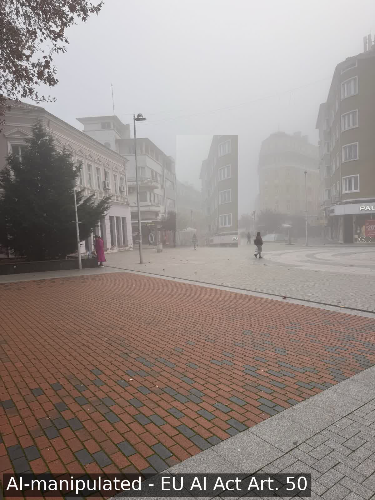

EU AI Act · Article 50 · open-source n8n module
Deployers answer for what they publish from 2 August 2026. This is the preparation: one module in front of any publishing step.

decision #61 · Ruslan (Slack U0C2N5PEJJV) · approve · 84c55f81 → 92d911ce · chain verified